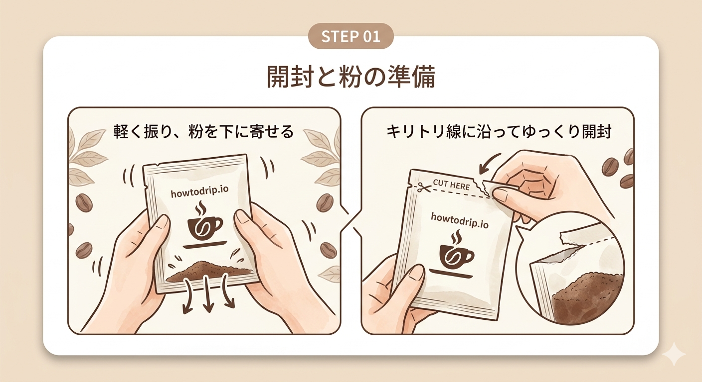
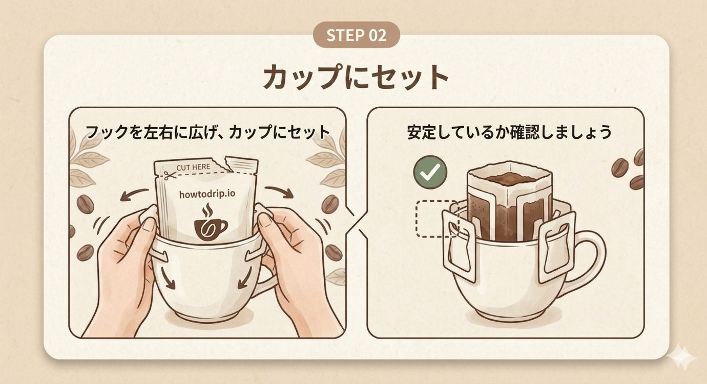
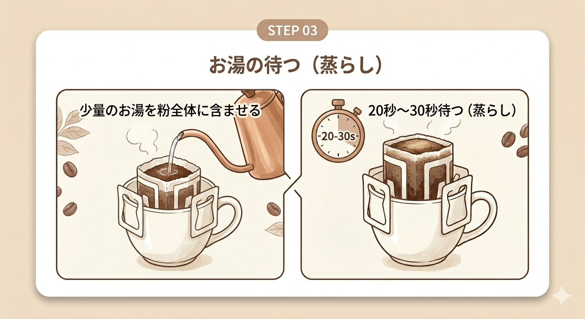
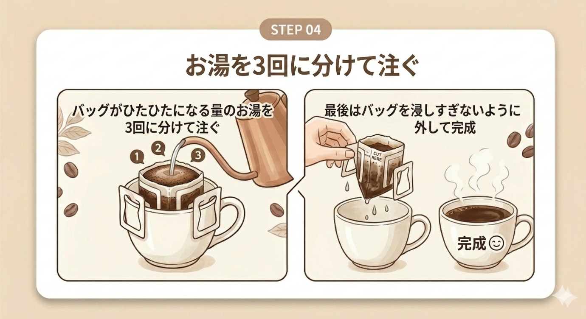

忙しい朝やリラックスタイムに。ドリップバッグで本格的なコーヒーを楽しむ手順をご紹介します。
STEP 01
準備と開封
バッグを軽く振り、粉を下に寄せます。キリトリ線に沿って、ゆっくりと開封してください。

STEP 02
カップへセット
フックを左右に広げ、カップの縁にしっかりと固定します。安定しているか確認しましょう。

STEP 03
蒸らし
少量のお湯を粉全体に含ませ、20秒〜30秒ほど待ちます。この「蒸らし」が美味しさの秘訣です。

STEP 04
注湯と完成
バッグがひたひたになる量のお湯を3回に分けて注ぎます。最後はバッグを浸しすぎないように外して完成です。
